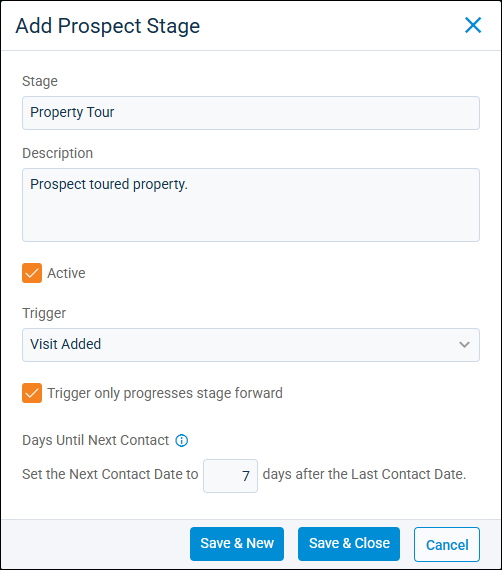

Source: https://rmxhelp.rentmanager.com/Topics/Express/Action/Prospect-Stage-Add.htm
Add a Prospect Stage
Prospect stages track the progression of prospects through the leasing process. For example, you might create a stage called Guest Card for first contact with prospects and another called Application Complete for prospects who apply to one of your properties. You can also use stages to search for prospect accounts and run prospect-related reports. Additionally, stages are used to organize the Prospect Leasing Board.
Related Privileges
| Group | Privilege | Column |
|---|---|---|
| Tenants/Prospects | Manage Prospect Stages | Enabled |
For more information, refer to Control User Access.
To add a prospect stage, do the following:
-
Go to
 arrow_forward Rental Info arrow_forward
arrow_forward Rental Info arrow_forward  Rental Info Setup arrow_forward Tenants/Prospects arrow_forward Prospect Stages.
Rental Info Setup arrow_forward Tenants/Prospects arrow_forward Prospect Stages.
The Prospect Stages page displays. -
Click
 Add.
Add.
-
Enter the following information about the stage:
Field Description Stage
The unique name for this stage (e.g., Guest Card, Property Tour, Application Sent).
Description
A brief message describing this stage (e.g., Applicant waitlisted until unit becomes available for a Waitlisted stage).
Active
Check to make the stage available to use.
Trigger
The action that causes the prospect to be moved to this stage automatically. If no trigger is selected, this stage is not set automatically, and a user must manually set the prospect to this stage.
Added to Waiting List
This stage is set when, on the prospect's details page, Wait List is selected for a unit.
Application Date Set
This stage is set when, on the prospect's details page, an Application Date is entered.
Apply Now Application Completed
This stage is set when all applicants have completed an Apply Now application.
Apply Now Application Sent
This stage is set when an application is sent via Send Online Application on the prospect's details page. You can select this option by going to
 arrow_forward Apply Now.
arrow_forward Apply Now.Apply Now Application Started
This stage is set when an applicant begins an Apply Now application or subapplication, but has not yet submitted it.
Appointment Added
This stage is set when an appointment is linked to a prospect's account.
Blue Moon eSignature Status Completed
This stage is set when the Blue Moon document is signed by all parties (residents and the owner or representative).
Blue Moon eSignature Status Expired
This stage is set when the Blue Moon eSignature request for the document has expired. This applies only to requests with an Expiration Date in the past.
Blue Moon eSignature Status In Progress
This stage is set when the Blue Moon document is signed by at least one resident.
Blue Moon eSignature Status Pending
This stage is set when the Blue Moon document and corresponding eSignature request is initiated and is still awaiting resident signature(s).
Blue Moon eSignature Status Signed
This stage is set when the Blue Moon document has been signed by all residents and is ready for completion by the owner or representative.
Charge Paid
This stage is set when a charge of the selected charge type(s) is fully paid. If multiple charge types are selected, the first charge paid in full triggers the stage change.
In the Charges field, select the charge type(s) to track.
Expected Move In Date Set
This stage is set when a Move In Date is entered on a prospect's account.
Guest Card Submitted
This stage is set when a guest card is submitted.
Identity Verified
This stage is set when Ibbie's ID verification process is successfully completed for the selected contact(s).
To set this stage when ID verification for the contact marked Primary on the account is completed, select Primary Contact. To set this stage when ID verification for all contacts with selected contact types are completed, select Contact Type and enable the desired contact types from the drop-down list.
Income Verification Complete
This stage is set when Ibbie's income verification process is successfully completed for the selected contact(s).
To set this stage when income verification for the contact marked Primary on the account is completed, select Primary Contact. To set this stage when income verification for all contacts with selected contact types are completed, select Contact Type and enable the desired contact types from the drop-down list.
Rent Quote Created
This stage is set when a Rent Quote is created for the prospect's account. A stage change is triggered only if the prospect does not have an existing rent quote linked to their account, or if all existing linked rent quotes have an Expired status.
Rent Quote Expired
This stage is set when all active rent quotes linked to the prospect's account have passed their expiration date, resulting in an Expired status.
Screening Completed
This stage is set when the result you designate is returned after a screening.
In the Workflow Solutions field, check each screening result that sets this stage.
To prevent the stage from being set based on the previous screening results of contacts on the prospect account, check Ignore trigger if another contact has one of the following screening workflow solutions. Then, in the drop-down, select each screening result that prevents the stage from being set.
Signable Document Completed
This stage is set when a signable document is completed.
After selecting this trigger, select from the following options:
-
By Prospect—the signable document is considered completed when the last prospect in the group signs (assuming the property manager signed before publishing).
-
By Landlord—the signable document is considered completed when Complete Packet is clicked in the Signable Documents page.
Signable Document Pending Acceptance
This stage is set when a signable document is signed by the recipient but not marked as complete.
Signable Document Published
This stage is set when a signable document is published.
Signable Document Voided
This stage is set when a signable document is voided.
Transfer Prospect Created
This stage is set when a prospect account is created from completing the transfer wizard. For more information, refer to Tenant Transfer Wizard.
Unable To Verify Identity
This stage is set when Ibbie's ID verification process is unsuccessful for the selected contact(s).
To set this stage when ID verification for the contact marked Primary on the account is unsuccessful, select Primary Contact. To set this stage when ID verification for all contacts with selected contact types is unsuccessful, select Contact Type and enable the desired contact types from the drop-down list.
Unit Reserved
This stage is set when a user reserves a unit for the prospect on the prospect's details page.
Visit Added
This stage is set when a prospect history/note item is added to the prospect account by clicking Add Visit.
Trigger only progresses stage forward
Prevents another occurrence of this trigger from reverting the current stage to one that is previously listed on the Prospect Stages page. For example, if Charge Paid is selected, this option prevents it from changing to the status set on the Charge Paid stage each time a new charge of the same charge type is paid.
Days Until Next Contact
The value used to calculate the Next Contact date, which displays on the Prospect Leasing Board prospect cards. For more information, refer to Prospect Leasing Board (Page).
-
-
To finish, click Save & Close, or to add additional prospect stages, click Save & New.
The new prospect stage(s) is added to Rent Manager.